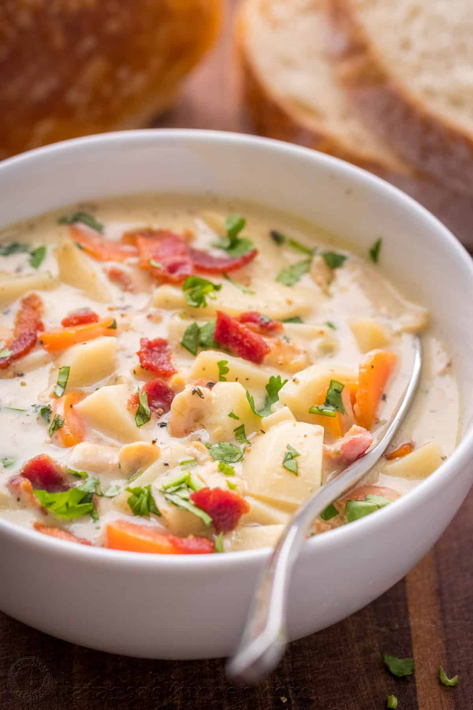

Kiri's Kitchen
Kiri's Kitchen is a cozy family-owned restaurant nestled in the heart of San Francisco. Established in 2015, it has been serving a fusion of traditional and modern American cuisines, providing a warm, welcoming ambiance that mirrors the comfort found in a family kitchen. The restaurant values fresh, locally sourced ingredients, community engagement, and providing a delightful dining experience that goes beyond just the meal. Kiri believes in creating a
place where every diner feels at home while enjoying hearty, delicious meals.
Menu Items
highlights
appetizers
Vegetable Spring Rolls $6.95
Crispy rolls that are filled with fresh veggies and served with a sweet chili dip

Clam Chowder Soup $7.95
Creamy New England-style chowder that is rich with clams and potatoes

Main Courses
Grilled Salmon $18.95
Freshly grilled salmon being served with a lemon-butter sauce, seasonal vegetables, and mashed potatoes
Classic Cheeseburger $14.95
Juicy beef patty served with cheddar cheese, lettuce, tomatoes, and house sauce. Don’t forget the side of fries!
Desserts
Apple Pie $6.95
Traditional apple pie topped with a scoop of vanilla ice cream and drizzled with caramel sauce
Chocolate Lava Cake $7.95
Served warm with a molten center and a dollop of whipped cream on top
Drinks
House Blend Coffee $3.50
a rich and smooth coffee blend that is freshly brewed when ordered
Mint Lemonade $4.50
A refreshing take on lemonade with a hint of mint
Weekly special
Every Monday is Pasta Night at Kiri’s Kitchen where you can enjoy any pasta dish at a $2 discount
Seasonal Menu
Winter Squash Soup $7.95
A creamy squash soup topped with roasted pumpkin seeds
Summer Berry Salad $10.95
Mixed greens with fresh berries, goat cheese and a raspberry vinaigrette
Reviews
Sara L left a 5-star review and said "The atmosphere is so warm and inviting, and the food is absolutely delicious! The grilled salmon is a must-try!" Mike D left a 4-star review and remarked, "I love the variety in the menu. The seasonal specials keep me coming back. Kiri's Kitchen has become our weekly dining spot." Emma R left a 5-star review and attested, "The apple pie is the best I've ever had. It's the perfect blend of sweet and tart, and the crust is just right. A cozy place with friendly staff!
Restaurant’s Contact Information
Phone number: (415) 555 - 1234
Location
Address: 123 Cozy Lane, San Francisco, CA 94102
operating hours:
Open Mon-Sun 11:00 AM - 10:00 PM